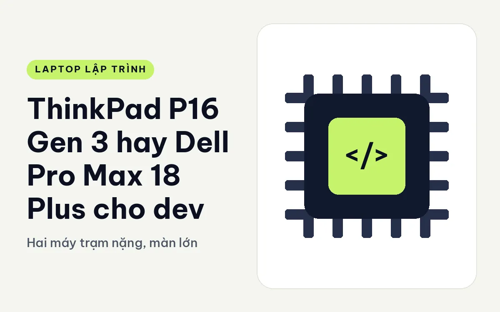
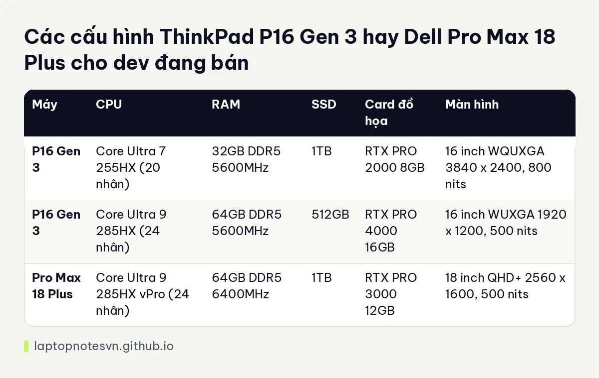

ThinkPad P16 Gen 3 hay Dell Pro Max 18 Plus cho dev - Hai máy trạm nặng, màn lớn

Hai máy này nằm ở đầu nặng nhất của các laptop dành cho người viết code. Chúng không phải loại bạn mang đi cà phê mỗi ngày, mà là cái trạm làm việc di động: mở ra ở văn phòng, ở nhà khách hàng, hay ở góc phòng nào đó có ổ điện. Câu hỏi là màn 16 inch của một bên hay màn 18 inch của bên kia, và RAM nâng được tới đâu.
Một bên là ThinkPad P16 Gen 3.
Bên còn lại là Dell Pro Max 18 Plus MB18250.
Cảm giác cầm và độ bền của hai máy
P16 Gen 3 nặng 2,54 kg, kích thước 362 x 252 mm, pin 99,9Wh. Pro Max 18 Plus nặng 3,25 kg, dày từ 17,92 đến 31,7 mm, kích thước 402 x 279,95 mm, pin 96Wh. Chênh lệch gần 0,7 kg là điều bạn cảm nhận ngay khi nhấc từng máy lên. Cạnh dài 402 mm của máy Dell cũng nghĩa là nó cần ba lô lớn hơn.
Cổng của hai máy khá tương đồng. P16 có 2 Thunderbolt 5 cộng 1 Thunderbolt 4, RJ45 2.5G và HDMI 2.1. Pro Max 18 Plus có 2 Thunderbolt 5 cộng 1 Thunderbolt 4, USB 3.2, HDMI 2.1, RJ45 2.5G và khe SD. Bên Dell thêm khe SD và cổng USB-A thông thường, bên Lenovo tập trung vào những cổng nhanh.
Khả năng nâng cấp là điểm Lenovo nổi trội. P16 Gen 3 có 4 khe SODIMM, nâng RAM tối đa 192GB, và SSD lên đến 12TB. Với dev làm việc trên dữ liệu lớn hoặc nhiều máy ảo, trần RAM 192GB gần như không máy nào khác trong tầm so sánh đạt tới.
Bản nào đủ sức cho việc code hằng ngày
| Máy | CPU | RAM | SSD | Card đồ họa | Màn hình |
|---|---|---|---|---|---|
| P16 Gen 3 | Core Ultra 7 255HX (20 nhân) | 32GB DDR5 5600MHz | 1TB | RTX PRO 2000 8GB | 16 inch WQUXGA 3840 x 2400, 800 nits |
| P16 Gen 3 | Core Ultra 9 285HX (24 nhân) | 64GB DDR5 5600MHz | 512GB | RTX PRO 4000 16GB | 16 inch WUXGA 1920 x 1200, 500 nits |
| Pro Max 18 Plus | Core Ultra 9 285HX vPro (24 nhân) | 64GB DDR5 6400MHz | 1TB | RTX PRO 3000 12GB | 18 inch QHD+ 2560 x 1600, 500 nits |
Bản P16 cao có RTX PRO 4000 16GB, mạnh hơn card RTX PRO 3000 12GB của Pro Max 18 Plus. Điều này nghe ngược trực giác vì máy Dell to hơn, nhưng đúng theo cấu hình đang bán. Máy Dell chỉ có một cấu hình, RAM 64GB tốc độ 6400MHz nhanh hơn 5600MHz của P16, SSD 1TB.

Điểm đặc biệt của Pro Max 18 Plus là màn 18 inch QHD+. Khung hiển thị rộng giúp mở ba cửa sổ code cạnh nhau mà không phải chia nhỏ. Nếu bạn từng làm việc trên màn 27 inch và thấy khó chịu khi quay lại 14 inch, màn 18 inch là nấc dễ chịu nhất mà vẫn là laptop.
Mỗi máy hợp với nhóm dev nào
- Dev AI, thử mô hình và huấn luyện nhỏ: P16 bản RTX PRO 4000 16GB có VRAM rộng nhất trong hai máy.
- Dev chạy nhiều máy ảo, nhiều container: trần RAM 192GB của P16 đáng giá, kể cả khi bạn chưa cần ngay.
- Dev ngồi một chỗ, cần màn lớn: Pro Max 18 Plus 18 inch dễ chịu hơn.
- Dev thỉnh thoảng phải mang đi: P16 nhẹ hơn gần 0,7 kg.
Màn hình, SSD và những chi tiết dễ bỏ sót
Hai bản P16 chênh nhau rõ ở màn hình. Bản 32GB dùng tấm WQUXGA 3840 x 2400 sáng 800 nits, phủ 100% DCI-P3 và hiệu chuẩn màu X-Rite tại nhà máy. Bản 64GB dùng WUXGA 1920 x 1200, 500 nits, phủ 100% sRGB. Nếu bạn cần nhìn màu chính xác thì chọn bản đầu, còn nếu cần card mạnh nhất và RAM lớn nhất thì phải chấp nhận màn thấp hơn.
SSD của bản P16 mạnh ở 512GB là điểm cần lưu ý: khe SSD nâng được lên tới 12TB theo mô tả, nên bạn có thể mua bản 512GB rồi thay ổ lớn sau, không phải lo chuyện dung lượng ngay. Pro Max 18 Plus có SSD 1TB chuẩn PCIe Gen4, còn bản P16 dùng Gen5, tốc độ cao hơn. Với dev đọc ghi nhiều tệp nhỏ, Gen5 không chênh lệch nhiều trong thao tác hằng ngày, nhưng khi sao chép tập dữ liệu lớn thì khác biệt thể hiện rõ.
Cuối cùng là thời gian cho tải nặng. Cả hai máy đều dùng chip HX 24 nhân (bản cao) và card Blackwell, tức là nhiệt lượng cao, quạt hoạt động mạnh. Đừng mua hai máy này để dùng làm laptop nhẹ nhàng ngồi quán, hãy mua khi bạn cần một cỗ máy thực sự.
Lời khuyên chọn máy theo từng trường hợp
Chọn P16 Gen 3 nếu bạn cần RAM nâng cấp được tối đa, GPU 16GB VRAM và muốn mang đi dễ hơn. Phân tích riêng nằm ở bài P16 Gen 3 cho lập trình.
Chọn Pro Max 18 Plus nếu màn hình lớn là ưu tiên, bạn cần khe SD và cổng USB-A, và máy gần như đặt cố định. Đọc thêm về nó ở Pro Max 18 Plus cho lập trình.
Với dev, trọng lượng thường là yếu tố thắng cuộc cuối cùng. Một chiếc máy 3 kg trong thực tế sẽ ở nhà nhiều hơn bạn dự tính.
Đăng ngày 09/11/2026